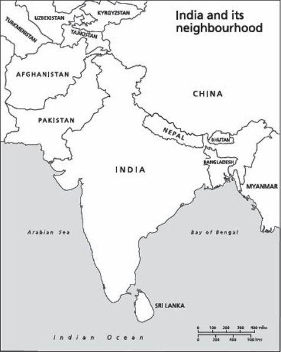

Because they are so many, and so various, the people of India are also divided. It appears to have always been so. In the spring of 1827 the poet Mirza Asadullah Khan Ghalib set out on a journey from Delhi to Calcutta. Six months later he reached the holy Hindu city of Banaras. Here he wrote a poem called ‘Chirag-i-Dair’ (Temple Lamps), which contains these timeless lines:
Said I one night to a pristine seer
(Who knew the secrets of whirling Time),
‘Sir, you well perceive,
That goodness and faith,
Fidelity and love
Have all departed from this sorry land.
Father and son are at each other’s throat;
Brother fights brother. Unity
and Federation are undermined.
Despite these ominous signs
Why has not Doomsday come?
Why does not the Last Trumpet sound?
Who holds the reins of the Final Catastrophe?’1
Ghalib’s poem was composed against the backdrop of the decline of the Mughal Empire. His home territory, the Indo-Gangetic plain, once ruled by a single monarch, was now split between contending chiefdoms and armies. Brother was fighting brother; unity and federation were being undermined. But even as he wrote, a new (and foreign) power was asserting its influence across the land in the form of the British, who were steadily acquiring control of the greater part of the subcontinent. Then in 1857 large sections of the native population rose up in what the colonialists called the Sepoy Mutiny and Indian nationalists later referred to as the First War of Indian Independence.
Some of the bloodiest fighting was in Ghalib’s home town, Delhi – still nominally the capital of the Mughals and in time to become the capital of the British Raj as well. His own sympathies were divided. He was the recipient of a stipend from the new rulers, yet a product of Mughal culture and refinement. He saw, more clearly than the British colonialist did then or the Indian nationalist does now, that it was impossible here to separate right from wrong, that horrible atrocities were being committed by both sides. Marooned in his home, he wrote a melancholy account of how ‘Hindustan has become the arena of the mighty whirlwind and the blazing fire’. ‘To what new order can the Indian look with joy?’ he asked.2
An answer to this question was forthcoming. After the events of 1857 the Crown took over control of the Indian colonies. A sophisticated bureaucracy replaced the somewhat ad-hoc and haphazard administration of the old East India Company. New districts and provinces were created. The running of the state was overseen by the elite cadre of the Indian Civil Service supported by departments of police, forests, irrigation, etc. Much energy (and money) was spent on building a railway network that criss-crossed the land. This contributed enormously to the unity of British India, as well as to its stability, for now the rulers could quickly move troops to forestall any repeat of 1857.
By 1888 the British were so solidly established in India that they could anticipate, if not a thousand-year Raj, at least a rule that extended well beyond their own lifetimes. In that year a man who had helped put the Raj in place gave a series of lectures in Cambridge which were later published in book form under the simple title India. The man was Sir John Strachey. Strachey had spent many years in the subcontinent, ultimately becoming amember of the Governor General’s Council. Now in retirement in England, he set his Indian experience against the background of recent political developments in Europe.
Large chunks of Strachey’s book are taken up by an administrative history of the Raj; of its army and civil services, its land and taxation policies, the peculiar position of the ‘native states’.This was a primer for those who might work in India after coming down from Cambridge. But there was also a larger theoretical argument to the effect that ‘India’ was merely alabel of convenience, ‘a name which we give to a great region including a multitude of different countries’.
In Strachey’s view, the differences between the countries of Europe were much smaller than those between the ‘countries’ of India. ‘Scotland is more like Spain than Bengal is like the Punjab.’ In India the diversities of race, language and religion were far greater. Unlike in Europe, these ‘countries’ were not nations; they did not have a distinct political or social identity. This, Strachey told his Cambridge audience, ‘is the first and most essential thing to learn about India – that there is not, and never was an India, or even any country of India possessing, according to any European ideas, any sort of unity, physical, political, social or religious’.
There was no Indian nation or country in the past; nor would there be one in the future. Strachey thought it ‘conceivable that national sympathies may arise in particular Indian countries’, but ‘that they should ever extend to India generally, that men of the Punjab, Bengal, the North-western Provinces, and Madras, should ever feel that they belong to one Indian nation, is impossible. You might with as much reason and probability look forward to a time when a single nation will have taken the place of the various nations of Europe.’3
Strachey’s remarks were intended as a historical judgement. At the time, new nations were vigorously identifying themselves within Europe on the basis of a shared language or territory, whereas none of the countries that he knew in India had displayed a comparable national awakening. But we might also read them as a political exhortation, intended to stiffen the will of those in his audience who would end up in the service of the Raj. For the rise of every new ‘nation’ in India would mean a corresponding diminution in the power and prestige of Empire.
Ironically, even as he spoke Strachey’s verdict was being disputed by a group of Indians. These had set up the Indian National Congress, a representative body that asked for a greater say for natives in the running of their affairs. As the name suggests, this body wished to unite Indians across the divisions of culture, territory, religion, and language, thus to construct what the colonialist thought inconceivable – namely, a single Indian nation.
Very many good books have been written on the growth of the Indian National Congress, on its move from debating club through mass movement to political party, on the part played by leaders such as Gokhale, Tilak and (above all) Gandhi in this progression. Attention has been paid to the building of bridges between linguistic communities, religious groupings and castes. These attempts were not wholly successful, for low castes and especially Muslims were never completely convinced of the Congress’s claims to be a truly ‘national’ party. Thus it was that when political independence finally came in 1947 it came not to one nation, but two – India and Pakistan.
This is not the place to rehearse the history of Indian nationalism.4 I need only note that from the time the Congress was formed right up to when India was made free – and divided – there were sceptics who thought that Indian nationalism was not a natural phenomenon at all. There were, of course, British politicians and thinkers who welcomed Indian self-rule and, in their own way, aided its coming into being. (One of the prime movers of the Indian National Congress was a colonial official of Scottish parentage, A. O. Hume.) Yetthere were many others who argued that, unlike France or Germany or Italy, there was here no national essence, no glue to bind the people and take them purposively forward. From this perspective stemmed the claim that it was only British rule that held India and the Indians together.
Among those who endorsed John Strachey’s view that there could never be an independent Indian nation were writers both famous and obscure. Prominent in the first category was Rudyard Kipling, who had spen this formative years in – and was to write some of his finest stories about – the subcontinent. In November 1891 Kipling visited Australia, where a journalist asked him about the ‘possibility of self-government in India’. ‘Oh no!’ he answered: ‘They are 4,000 years old out there, much too old to learn that business. Law and order is what they want and we are there to give it to them and we give it them straight.’5
Where Kipling laid emphasis on the antiquity of the Indian civilization, other colonialists stressed the immaturity of the Indian mind to reach the same conclusion: namely, that Indians could not govern themselves. A cricketer and tea planter insisted, after forty years there, that
[c]haos would prevail in India if we were ever so foolish to leave the natives to run their own show. Ye gods! What a salad of confusion, of bungle, of mismanagement, and far worse, would be the instant result.
These grand people will go anywhere and do anything if led by us.
Themselves they are still infants as regards governing or statesmanship. And their so-called leaders are the worst of the lot.6
Views such as these were widely prevalent among the British in India, and among the British at home as well. Politically speaking, the most important of these ‘Stracheyans’ was undoubtedly Winston Churchill. In the 1940s, with Indian independence manifestly round the corner, Churchill grumbled that he had not become the King’s first minister in order to preside over the liquidation of the British Empire.
A decade previously he had tried to rebuild a fading political career on the plank of opposing self-government for Indians. After Gandhi’s ‘salt satyagrafra’ of 1930 in protest against taxes on salt, the British government began speaking with Indian nationalists about the possibility of granting the colony dominion status. This was vaguely defined, with no timetable set for its realization. Even so, Churchill called the idea ‘not only fantastic in itself but criminally mischievous in its effects’. Since Indians were not fit for self-government, it was necessary to marshal ‘the sober and resolute forces of the British Empire’ to stall any such possibility.
In 1930 and 1931 Churchill delivered numerous speeches designed to work up, in most unsober form, the constituency opposed to independence for India. Speaking to an audience at the City of London in December 1930, he claimed that if the British left the subcontinent, then ‘an army of white janissaries, officered if necessary from Germany, will be hired to secure the armed ascendancy of the Hindu’. Three months later, speaking at the Albert Hall on ‘Our Duty to India’ – with his kinsman the Duke of Marlborough presiding – Churchill argued that ‘to abandon India to the rule of the Brahmins [who in his opinion dominated the Congress Party] would be an act of cruel and wicked negligence’. If the British left, he predicted, then the entire gamut of public services created by them – the judicial, medical, railway and public works departments – would perish, and ‘India will fall back quite rapidly through the centuries into the barbarism and privations of the Middle Ages’.7
A decade and a half after Winston Churchill issued these warnings, the British left India. A time of barbarism and privation did ensue, the blame for which remains a matter of much dispute. But then some sort of order was restored. No Germans were necessary to keep the peace. Hindu ascendancy, such as it was, was maintained not by force of arms but through regular elections based on universal adult franchise.
Yet, throughout the sixty years since India became independent, there has been speculation about how long it would stay united, or maintain the institutions and processes of democracy. With every death of a prime minister has been predicted the replacement of democracy by military rule; after every failure of the monsoon there has been anticipated country wide famine; in every new secessionist movement has been seen the disappearance of India as a single entity.
Among these doomsayers there have been many Western writers who, after 1947, were as likely to be American as British. Notably, India’s existence has been a puzzle not just to casual observers or commonsensical journalists; it has also been an anomaly for academic political science, according to whose axioms cultural heterogeneity and poverty do not make a nation, still less a democratic one. That India ‘could sustain democratic institutions seems, on the face of it, highly improbable’, wrote the distinguished political scientist Robert Dahl, adding: ‘It lacks all the favourable conditions.’ ‘India has a well-established reputation for violating social scientific generalizations’, wrote another American scholar, adding: ‘Nonetheless, the findings of this article furnish grounds for skepticism regarding the viability of democracy in India.’8
The pages of this book are peppered with forecasts of India’s imminent dissolution, or of its descent into anarchy or authoritarian rule. Here, let me quote only a prediction by a sympathetic visitor, the British journalist Don Taylor. Writing in 1969, by which time India had stayed united for two decades and gone through four general elections, Taylor yet thought that
the key question remains: can India remain in one piece – or will it fragment? . . . When one looks at this vast country and its 524 million people, the 15 major languages in use, the conflicting religions, the many races, it seems incredible that one nation could ever emerge.
It is difficult to even encompass this country in the mind – the great Himalaya, the wide Indo-Gangetic plain burnt by the sun and savaged by the fierce monsoon rains, the green flooded delta of the east, the great cities like Calcutta, Bombay and Madras. It does not, often, seem like one country. And yet there is a resilience about India which seems an assurance of survival. There is something which can only be described as an Indian spirit.
I believe it no exaggeration to say that the fate of Asia hangs on its survival.9
The heart hoped that India would survive, but the head worried that it wouldn’t. The place was too complicated, too confusing – a nation, one might say, that was unnatural.
In truth, ever since the country was formed there have also been many Indians who have seen the survival of India as being on the line, some (the patriots) speaking or writing in fear, others (the secessionists or revolutionaries) with anticipation. Like their foreign counterparts, they have come to believe that this place is far too diverse to persist as a nation, and much too poor to endure as a democracy.
In the last decade of the last century I became a resident of Ghalib’s native city. I lived, however, not in the old walled town where his family haveli, or mansion, still stands, but in New Delhi, built as an imperial capital by the British. As in the poet’s day, Indian was fighting Indian. On my way to work I had to pass through Rajpath (formerly Kingsway), the road whose name and location signal the exercise of state power. For about a mile, Rajpath runs along flat land; on either side are spacious grounds meant to accommodate the thousands of spectators who come for the annual Republic Day parade. The road then ascends a hill and reaches the majestic sandstone buildings known as the North and South Blocks, which house the offices of the Government of India. The road ends in the great house where the Viceroy of British India once lived.
By the time I moved to New Delhi the British had long departed. India was now a free and sovereign republic. But not, it seemed, an altogether happy one. The signs of discord were everywhere. Notably on Rajpath, where the grounds meant to be empty except on ceremonial days had become a village of tents, each with colourful placards hung outside it. One tent might be inhabited by peasants from the Uttarak-hand Himalaya, seeking a separate province; a second by farmers from Maharashtra, fighting for a higher price for their produce; a third by residents of the southern Konkan coast, urging that their language be given official recognition by inclusion in the Eighth Schedule of the Constitution of India.
The people within these tents and the causes they upheld were ever changing. The hill peasants might be replaced by industrial workers protesting retrenchment; the Maharashtra farmers by Tibetan refugees asking for Indian citizenship; the Konkani speakers by Hindu monks demanding a ban on cow slaughter.
In the early nineties, these tents were summarily dismantled by a government worried about the impression made on foreign visitors by such open expression of dissent. Rajpath was vacated of encroachments and the lawns restored to their former glory. But the protesters regrouped, and relocated. They now placed themselves a mile to the north-west, next to the Jantar Mantar observatory in Connaught Place. Here they were away from the eyes of the state, but directly in view of the citizens who daily passed through this busy shopping district. In 1998 the police decided this would not do either. The shanties were once again demolished, but, as a newspaper report had it, ‘as far as the authorities are concerned, only the venue has changed – the problem persists. The squatters are merely to be shifted to an empty plot at the Mandir Marg–Shankar Road crossing, where they are likely to draw less attention.’10
When I lived in Delhi, in the 1990s, I wished I had the time to walk on Rajpath every day from the first of January to the thirty-first of December, chronicling the appearance and disappearance of the tents and their residents. That would be the story of India as told from a single street, and in a single year. The book that is now in your hands follows a different method. Its narrative extends over six decades, from 1947 to the present. However, like the book that I once intended to write – based on a year spent walking up and down Rajpath – this too is a story, above all, of social conflicts, of how these arise, how they are expressed, and how their resolution is sought.
These conflicts run along many axes, among which we may – for the moment – single out four as pre-eminent. First, there is cast, a principal identity for many Indians, defining whom they might marry, associate with and fight against. ‘Caste’ is a Portuguese word that conflates two Indian words: jati, the endogamous group one is born into, and varna, the place that group occupies in the system of social stratification mandated by Hindu scripture. There are four varnas, with the former ‘Untouchables’ constituting afifth (and lowest) strata. Into these varnas fit the 3,000 and more jatis, each challenging those, in the same region, that are ranked above it, and being in turn challenged by those below.
Then there is language. The Constitution of India recognizes twenty-two languages as ‘official’. The most important of these is Hindi, which in one form or another is spoken by upwards of 400 million people. Others include Telugu, Kannada, Tamil, Malayalam, Marathi, Gujarati, Oriya, Punjabi, Bengali and Assamese, each of which is written in a distinct script and boasts many millions of native speakers. Naturally, national unity and linguistic diversity have not always been seen to be compatible. Indians speaking one tongue have fought with Indians who speak another.
A third axis of conflict is religion. A vast majority of the billion-plus Indians are Hindus. But India also has the second largest population of Muslims in the world – about 140 million (only Indonesia has more). In addition there are substantial communities of Christians, Sikhs, Buddhists, and Jains. Since faith is as fundamental a feature of human identity as language, it should scarcely be a surprise that Indians worshipping one variation of God have sometimes quarrelled with Indians worshipping another.
The fourth major axis of conflict is class. India is a land of unparalleled cultural diversity but also, less appealingly, of massive social disparities. There are Indian entrepreneurs who are fabulously wealthy, owning huge homes in London and New York. Yet fully 26 per cent of the country’s population, about 300 million individuals, are said to live below the official poverty line. In the countryside there are deep inequalities in landholding; in the city, wide divergences in income. Not unexpectedly, these asymmetries have fuelled many movements of opposition.
These axes of conflict operate both singly and in tandem. Sometimes a group professing a particular faith also speaks a separate language. Often the low castes are the subordinate classes as well. And to these four central axes one should perhaps add a fifth that cuts right across them: that of gender. Here,again, India offers the starkest contrasts. A woman served as prime minister for a full fifteen years, yet in some parts of India female infanticide is still very common. Landless labourers are paid meagre wages, the women among them the lowest of all. Low castes face social stigma, the women among them most of all. And the holy men of each religion tend to assign their women an inferior position in both this world and the next. As an axis of discrimination, gender is even more pervasive than the others, although it has not so often expressed itself in open and collective protest.
As a laboratory of social conflict the India of the twentieth century is – for the historian – at least as interesting as the Europe of the nineteenth. In both the conflicts were produced by the conjunction of two truly transformative processes of social change: industrialization and the making of modern nation-states. In India the scope for contention has been even greater, given the diversity of competing groups across religion, caste, class and language. Conflicts are also more visible in the subcontinent since, unlike nineteenth-century Europe, contemporary India is a democracy based on adult suffrage, with a free press and a largely independent judiciary. At no other time or place in human history have social conflicts been so richly diverse, so vigorously articulated, so eloquently manifest in art and literature, or addressed with such directness by the political system and the media.
One way of summarizing the history of independent India – and the contents of this book – would be through a series of ‘conflict maps’. One might draw a map of India for each decade, with the conflicts then prevalent marked in various colours depending on their intensity: blue for those that democratically advance the interests of a particular group; red for those that more aggressively, yet still non-violently, ask for a major change in the law; black for those that seek the destruction of the Indian state by armed insurrection.
Reading these maps chronologically, one would find major variations across the decades, with red areas becoming black, black areas becoming red, and blue and red areas becoming white, that being the colour of those parts of India where there appears to be no major conflict at all. These maps would present a vivid kaleidoscope of changing colours. But amid all the changes the discerning observer would also notice that two things remain constant. The first is that the shape of the map does not change through all its iterations. This is because no part of India has successfully left India. The second is that at no time do the blue, red and black areas, taken together, anywhere approximate the extent of the white areas of the map. Even in what were once known as its ‘dangerous decades’, much more than 50 per cent of India was comfortably at peace with itself.
The press nowadays – broadsheet and tabloid, pink and white, Indian and Western –is chock full of stories of India’s economic success, this reckoned to be so much at odds with its past history of poverty and deprivation. However, the real success story of modern India lies not in the domain of economics butin that of politics. The saluting of India’s ‘software boom’ might be premature. We do not yet know whether this will lead to amore general prosperity among the masses. But that India is still a single nation after sixty testing years of independence, and that it is still largely democratic – these are facts that should compel our deeper attention. A recent statistical analysis of the relationship between democracy and development in 135 countries found that ‘the odds against democracy in India were extremely high’. Given its low levels of income and literacy, and its high levels of social conflict, India was ‘predicted as [a] dictatorship during the entire period’ of the study (1950–90). Since, in fact, it was a democracy practically the entire period studied, there was only one way to characterize India, namely as ‘a major outlier’.11
To explain this anomaly, this paradox, one needs perhaps to abandon the methods of statistical social science – in which India will always be the exception to the rule – in favour of the more primitive techniques of the narrative historian. The forces that divide India are many. This book pays due attention to them. But there are also forces that have kept India together, that have helped transcend or contain the cleavages of class and culture, that – so far, at least – have nullified those many predictions that India would not stay united and not stay democratic. These moderating influences are far less visible; it is one aim of this book to make them more so. I think it premature now to identify them; they will become clearer as the narrative proceeds. Suffice it to say that they have included individuals as well as institutions.
V
‘[The] period of Indian history since 1947’, writes the political theorist Sunil Khilnani, ‘might be seen as the adventure of apolitical idea: democracy.’ Viewed thus, independent India appears as the ‘third moment in the great democratic experiment launched at the end of the eighteenth century by the American and French revolutions’. Each of these experiments ‘released immense energies; each raised towering expectations; and each has suffered tragic disappointments’. While the Indian experiment is the youngest, says Khilnani, ‘its outcome may well turn out to be the most significant of them all, partly because of its sheer human scale, and partly because of its location, a substantial bridgehead of effervescent liberty on the Asian continent’.12
As an Indian, I would like to think that democracy in India will turn out to be ‘more significant’ than comparable experiments in the West. As a historian, I know only that it is much less studied. There are hundreds, perhaps thousands, of books on the French and American revolutions: biographies of their leaders famous and obscure, studies of the social background of those who participated in them, assessments of their deepening or degradation in the decades and centuries that followed. By contrast, the works by historians on any aspect of Indian democracy can be counted on the fingers of one hand – or, if one is more open-minded, two.
The educationist Krishna Kumar writes that ‘for Indian children history itself comes to an end with Partition and Independence. As a constituent of social studies, and later on as a subject in its own right, history runs right out of content in 1947 . . . All that has happened during the last 55 years may filter through them easly civics syllabus, popular cinema and television; history as formally constituted knowledge of the past does not cover it.’13
If, for Indian children, history comes to an end with Independence and Partition, this is because Indian adults have mandated it that way. In the academy, the discipline of history deals with the past, while the disciplines of political science and sociology deal with the present. This is a conventional and in many ways logical division. The difficulty is that in the Indian academy the past is defined as a single, immovable date: 15 August 1947. Thus, when the clock struck midnight and India became independent, history ended, and political science and sociology began.
In the decades since 1947, the present has moved on. Political scientists studied the first general election of 1952, and then the next one held five years later. Social anthropologists wrote accounts of Indian villages in the 1950s, and then some more in the 1960s. The past, however, has stayed fixed. By training and temperament, historians have restricted themselves to the period before Independence. A vast literature grew – and is still growing – on the social, cultural, political and economic consequences of British colonialism. A even more vast literature grew – and it too is still growing – on the forms, functions, causes and consequences of the opposition to colonial rule. Leading that opposition was the social reformer, spiritualist, prophet and political agitator Mohandas Karamchand Gandhi.
Gandhi was, and remains, greatly admired by some and cordially detested by others. Much the same could be said of the monumental edifice he opposed, the British Raj. The British finally left India in August 1947; Gandhi was assassinated by a fellow Indian a bare five and a half months later. That the demise of the Raj was followed so quickly by the death of its most celebrated opponent has had a determining influence on the writing of history. One cannot say whether, if Gandhi had lived on much longer, historians would have shown greater interest in the history of free India. As it turned out, by custom and convention Indian history is seen as ‘ending’ on 15 August 1947 – although biographers of the Mahatma are allowed a six-month extension. Thus many fine, as well as controversial, books have been written on the last intense, conflict-filled years of British India. That great institution, the British Raj, and that great individual, Mahatma Gandhi, continue to be of absorbing interest to historians. But the history of independent India has remained a field mostly untilled. If history is ‘formally constituted knowledge of the past’, then for the period since 1947 this knowledge practically does not exist.
And yet, as this book shows, the first years of freedom were as full of dramatic interest as the last years of the Raj. The British had formally handed over power, but authority had to be created anew. Partition had not put an end to Hindu–Muslim conflict, nor Independence to class and caste tension. Large areas of the map were still under the control of the Maharajas; these had to be brought into the Indian Union by persuasion or coercion. Amidst the wreckage of a decaying empire a new nation was being born – and built.
Of his recent history of postwar Europe, Tony Judt writes that ‘a book of this kind rests, in the first instance, on the shoulders of other books'. He notes that ‘for the brief sixty-year period of Europe’s history since the end of the Second World War – indeed, for this period above all – the secondary literature in English is inexhaustible’.14 The situation in India is all too different. Here the gaps in our knowledge are colossal. The Republic of India is a union of twenty-eight states, some larger than France. Yet not even the bigger or more important of these states have had their histories written. In the 1950s and 60s India pioneered a new approach to foreign policy, and to economic policy and planning as well. Authoritative or even adequate accounts of these experiments remain to be written. India has produced entrepreneurs of great vision and dynamism – but the stories of the institutions they built and the wealth they created are mostly unwritten. Again, there are no proper biographies of some of the key figures in our modern history: such as Sheikh Abdullah or Master Tara Singh or M. G. Ramachandran, ‘provincial’ leaders each of whose province is the size of a large European country.
Unlike a history of postwar Europe, a history of postwar India cannot simply rest on the shoulders of other books on more specialized subjects. In matters great and small it must fill in the blanks using materials picked up by the author. My first mentor, a very wise old civil servant named C. S. Venkatachar, once told me that every work of history is ‘interim’, to be amplified, amended, contested, and overthrown by works written in its wake. Despite the range of subjects it covers, this book cannot hope to have treated any of them comprehensively. Individual readers will have their own particular grouses; some might complain, for instance, that I have not said enough here about tribals, others that I should have written even more pages on Kashmir.
My own hopes for this book are best expressed in the words of Marc Bloch, writing about another country in another time:
I could liken myself to an explorer making a rapid survey of the horizon before plunging into thickets from which the wider view is no longer possible. The gaps in my account are naturally enormous. I have done my best not to conceal any deficiencies, whether in the state of our knowledge in general or in my own documentation . . . When the time comes for my own work to be superseded by studies of deeper penetration, I shall feel well rewarded if confrontation with my false conjectures has made history learn the truth about herself.15
VI
The great Cambridge historian F. W. Maitland liked to remind his students that ‘what is now in the past was once in the future’. There could be no better maxim for the historian, and especially the historian of the recent past, who addresses an audience with very decided views on the subjects about which he presumes to inform them. An American historian of the Vietnam War is read by those who have mostly made up their minds on whether the war was just or not. A French historian of the student movement of 1968 knows that his readers shall have forceful, if mutually contradictory, opinions about that particular upsurge.
Those who write contemporary history know that the reader is not a passive vessel to receive the text placed before him or her. The reader is also a citizen, a critical citizen, with individual political and ideological preferences. These preferences direct and dictate the reader’s view of the past, and of leaders and lawmakers most particularly. We live with the consequences of decisions taken by modern politicians, and often presume that an alternate politician – someone modelled on oneself – would have taken better or wiser decisions.
The furtherback we go in time, the less of a problem this is. Historians of the eighteenth century seek to interpret and understand that time, and so, following them, do their readers. A biographer of Jefferson or Napoleon can count on more trusting readers – they do not presume to know the things those men did, or wish they should have done them differently. Here, the reader is usually happy to be led and guided by the expert. But the biographer of John F. Kennedy or Charles de Gaulle is not so fortunate. Some, perhaps many, potential readers already know the ‘truth’ about these men, and are less willing to hear alternative versions of it, even if they are backed up by copious footnotes.
Contemporary historians thus face a challenge from their readers which their more backward-looking colleagues avoid. But there is also a second, and perhaps less commonly acknowledged, challenge. This is that the historian too is a citizen. The scholar who chooses to write on the Vietnam War already has strong views on the topic. The scholar who writes on the American Civil War would have less strong views, and one who writes on the Revolutionary War weaker views still. For the historian as well as the citizen, the closer one gets to the present, the more judgement alone tends to become.
In writing this book I have tried to keep Maitland’s maxim always in front of me. I have been driven by curiosity rather than certainty, by the wish to understand rather than the desire to pass judgement. I have sought to privilege primary sources over retrospective readings, thus to interpret an event of, say, 1957 in terms of what was known in 1957 rather than in 2007. This book is, in the first instance, simply an attempt to tell the modern history of one-sixth of humankind. It is an account, as well as analysis, of the major characters, controversies, themes and processes in independent India. However, the manner of the story’s telling has been driven by two fundamental ambitions: to pay proper respect to the social and political diversity of India, and to unravel the puzzle that has for so long confronted scholar and citizen, foreigner as well as native – namely, why is there an India at all?
